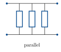
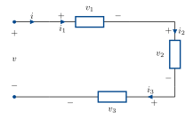
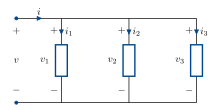
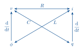
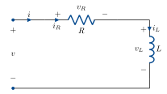

A primer on RLC circuits
Other formats:
📄 PDFRLC circuits are an important and useful class of LTI systems that are widely used in analogue signal processing.
RLC circuits are interconnections of resistors (R), capacitors (C) and inductors (L) that manipulate voltages and currents.
Current is the flow (rate of change) of charge (unit: Coulombs). It is measured in Amperes, which are Coulombs/second.
Voltage is a difference in potential energy which forces current to flow. It is measured in Volts, which are Joules/Coulomb.
RLC circuits are described by a couple of things:
- a circuit diagram which illustrates how components are interconnected and which component goes where.
- a choice of input(s): ideal voltage and current sources.
- a choice of output(s): the current(s) or voltage(s) that we measure.
The circuit is governed by two sets of laws:
Kirchhoff’s laws describe the interconnection structure of the circuit diagram: how are current and voltage related between components.
The device laws describe how the current and voltage are related across an individual component.
Combining Kirchhoff’s laws and the device laws gives a complete description of the circuit behaviour.
Kirchhoff’s laws for series & parallel circuits
Kirchhoff’s laws can be solved for an arbitrary circuit diagram, but in ELEC2302/9302, we will only use two special cases: series and parallel circuits.

Each device has a current flowing through it and a voltage across it.
By convention, current flows from + to −.
The current and voltage have a direction, which you can choose: the important thing is to be consistent. If the actual current flows the other way, you will get a minus sign in your analysis.
For series and parallel circuits, Kirchhoff’s laws say the following.
Series circuit

Kirchhoff’s current law: the current through devices in series is equal. i_1 = i_2 = i_3.
Kirchhoff’s voltage law: the voltages around the loop sum to zero. -v + v_1 + v_2 + v_3 = 0. To get the sign of each voltage, follow i around the loop and take the sign of the terminal it enters for each device.
Parallel circuit

Kirchhoff’s voltage law: the voltage across devices in parallel is equal. v_1 = v_2 = v_3.
Kirchhoff’s current law: the sum of the currents through the devices equals the total current i.
i = i_1 + i_2 + i_3 .
Device laws
There are four fundamental quantities in a circuit: current i(t), charge q(t), voltage v(t) and magnetic flux linkage \phi(t).
Current and charge are related by \dfrac{\mathrm{d}}{\mathrm{d}t}\,q(t) = i(t).
Voltage and flux are related by \dfrac{\mathrm{d}}{\mathrm{d}t}\,\phi(t) = v(t).
Resistors, capacitors and inductors each give a static linear relationship between two of these variables.

Resistor: v = Ri (Ohm’s law).
Capacitor: q = Cv, or i = \dfrac{\mathrm{d}}{\mathrm{d}t}\,Cv.
Inductor: \phi = Li, or v = \dfrac{\mathrm{d}}{\mathrm{d}t}\,Li.
By combining Kirchhoff’s laws and the device laws, we can completely solve a circuit. Let’s see how on an example.
Example: series RL

For now, let’s solve in terms of arbitrary applied voltage and current, before choosing an input.
Annotate the diagram with voltages and currents for the resistor and inductor.
Now follow the three standard steps: write down Kirchhoff’s laws, write down the device laws and combine.
In this case, the circuit is series, so we have:
i = i_R = i_L. \qquad \text{(KCL)}
v = v_R + v_L. \qquad \text{(KVL)}
Devices:
\begin{aligned} v_R &= R\,i_R \\[2pt] v_L &= \frac{\mathrm{d}}{\mathrm{d}t}\,L\,i_L . \end{aligned}
Combine:
\begin{aligned} v_R &= R\,i \\[2pt] v_L &= \frac{\mathrm{d}}{\mathrm{d}t}\,L\,i \\[2pt] v &= R\,i + \frac{\mathrm{d}}{\mathrm{d}t}\,L\,i . \qquad(1) \end{aligned}
This describes the circuit. We can now choose a particular input and output to get a system.
For example: input v, output v_R.
v already features in equation (1). Let’s eliminate i and get an expression with v_R.
i = \frac{1}{R}\,v_R .
In (1):
\boxed{\; v = v_R + \frac{\mathrm{d}}{\mathrm{d}t}\,\frac{L}{R}\,v_R \;} \qquad(2)
This is an equivalent description of the circuit with only the input and output variables we’re interested in.
Every circuit in the lectures and tutorials can be solved this way. Work through some examples: parallel, RC and RLC.